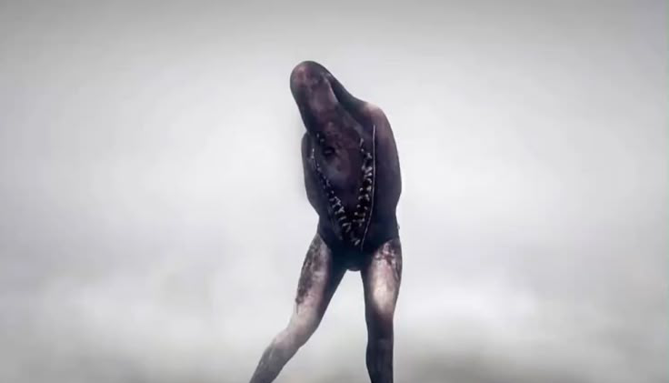
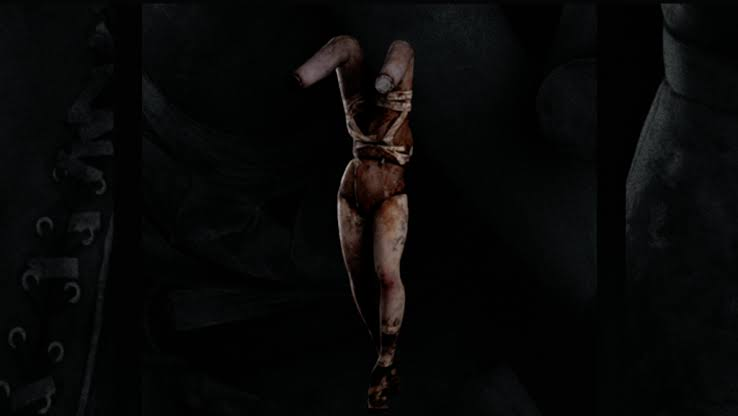
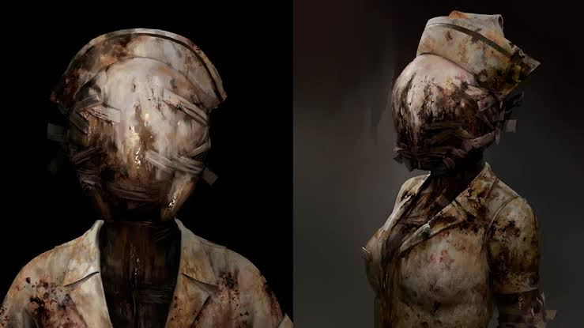

Pyramid Head
Pyramid Head is one of the most recognizable monsters in Silent Hill 2 Remake. He is a tall, powerful figure who wears a huge, pyramid-shaped metal helmet and carries a massive weapon. He moves slowly but is extremely intimidating and difficult to forget. Pyramid Head represents punishment and is closely connected to James Sunderland's guilt and desire to be punished. His terrifying appearance and behavior make him one of the most scary monsters in the game.

Lying Figure
The Lying Figure is one of the first monsters James encounters in Silent Hill 2 Remake. Its body is wrapped in a tight, skin-like covering, with its arms trapped against its torso. It moves in an awkward, disturbing way and can attack James at close range or spit acid from its body. Its design makes it look as if it is trapped inside itself. The creature is often interpreted as representing pain, suffering, and repression, reflecting some of the darker themes of the game.

Mannequins
The Mannequins are disturbing creatures made from what appear to be human legs joined together in unnatural ways. They often hide in dark corners or blend into their surroundings, suddenly attacking James when he gets too close. Their unusual bodies and unpredictable movements make them especially unsettling. The Mannequins are commonly interpreted as representing James's repressed thoughts and sexual frustration. They also make ordinary environments feel dangerous because players can never be completely sure whether a mannequin is just part of the scenery or a real threat.

Bubble Head Nurses
The Bubble Head Nurses are frightening monsters found mainly in the Brookhaven Hospital. They have distorted faces, revealing outfits, and carry weapons such as pipes. Their strange movements and sudden attacks make them dangerous enemies, especially in narrow hospital corridors. The nurses are often interpreted as reflecting James's memories, desires, and complicated feelings connected to his wife, Mary, and her illness. Their disturbing appearance turns a place associated with care and healing into a place of fear.